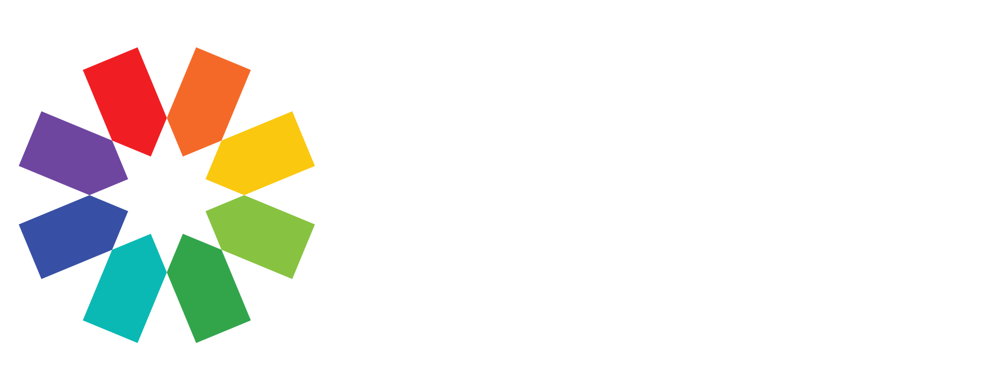

<div class="topology-container">

  

  <span class="p-float-label" [ngStyle]="{'position':'fixed','z-index':'1000','top':'40px','left':'30%','width':'30%'}">
    <p-autoComplete
        inputId="float-label"
        field="name"
        [suggestions]="suggestions" 
        [minLength]="3" 
        [style]="{'width':'100%'}"
        [inputStyle]="{'width':'100%'}"
        [showClear]="true"
        (completeMethod)="search($event)"
        (onSelect)="onSelectDisorder($event)">
      
    </p-autoComplete>
    
      <label for="float-label">Search disorders...</label>
  </span>

  <div #nodeMenu id="nodeMenu"
        *ngIf="isNodeMenuVisible"
        [style]="{'padding':'0'}"
        [ngStyle]="{'left':nodeMenuLeft, 'top':nodeMenuTop, 'background-color':'transparent', 'text-align':'center','width':'30px'}">
        <p-speedDial #speedMenu [model]="nodeMenuItems" 
            showIcon="pi pi-bars" 
            direction="right"
            [rotateAnimation]="false">
        </p-speedDial>
  </div>

  <div #expandMenu id="expandMenu" 
        *ngIf="isContextMenuVisible"
        [style]="{'padding':'0'}"
        [ngStyle]="{'left':menuLeft, 'top':menuTop, 'background-color':'transparent', 'text-align':'center','width':'300px'}">

        <div >
          <p-button label="Broader" [style]="{'width':'50%','display':'inline','background-color':'#29a'}" (onClick)="onBroader()"></p-button> 
          <p-button label="Narrower" [style]="{'width':'50%','display':'inline','background-color':'#29a'}" (onClick)="onNarrower()"></p-button>
        </div>
    <p-listbox
          [options]="outconnections"
          [(ngModel)]="selectedConn"
          [multiple]="true"
          [checkbox]="true"
          optionLabel="name"
          [listStyle]="{'max-height': menuHeight}"></p-listbox>
          
    <p-button label="Expand" [style]="{'width':'100%'}" (onClick)="onExpand()"></p-button> 
  </div>

  <div id="cy" #cy  style=" background: radial-gradient(circle, rgb(240, 240, 240) 0%, rgb(166, 218, 224) 100%); "></div>
  
</div>